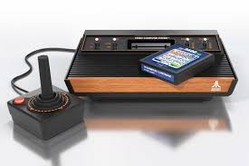

¿Qué son los videojuegos retro?
Los videojuegos retro son títulos clásicos que marcaron la historia del gaming. Suelen asociarse a consolas como NES, SNES, Mega Drive, Atari 2600 y muchas más.
Hoy en día, el estilo pixel art, la música chiptune y la jugabilidad directa siguen inspirando a estudios modernos.
Gameplay clásico
Mira un ejemplo de vídeo retro:
Características típicas de los juegos retro
- Jugabilidad directa y centrada en la habilidad del jugador
- Estética pixelada característica de la época
- Sonido sintetizado con chips de 8 y 16 bits
- Controles simples pero precisos
- Historias breves pero muy memorables